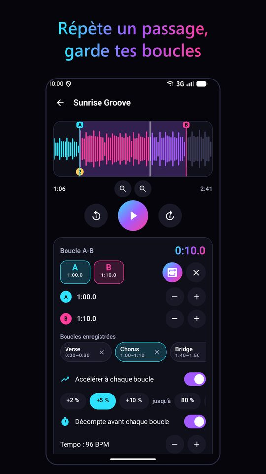
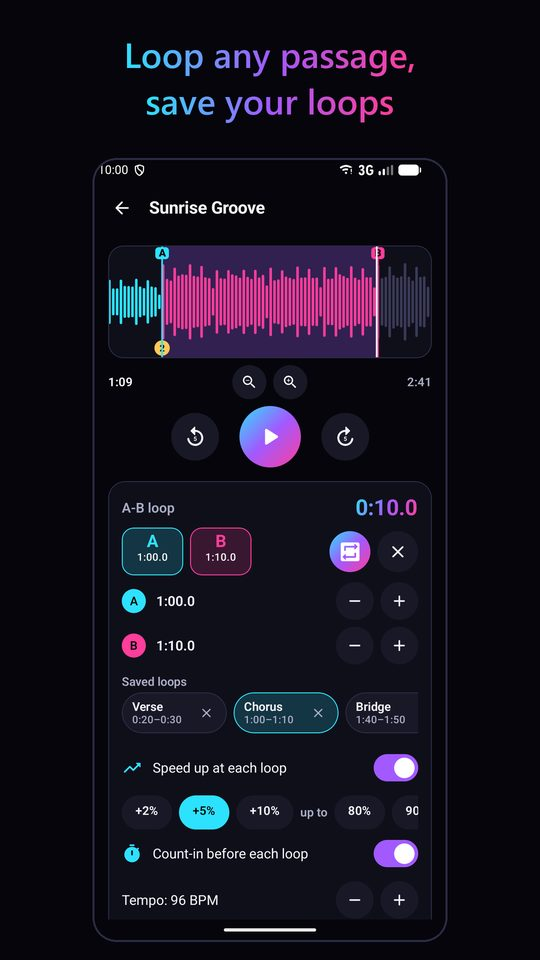
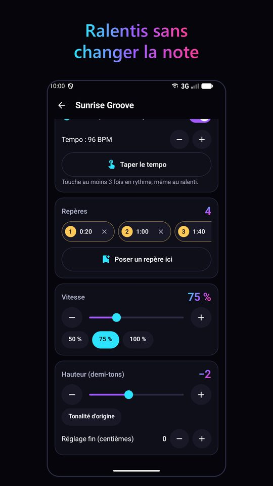
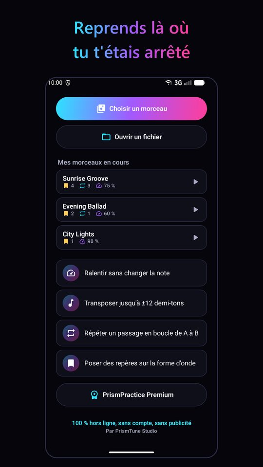
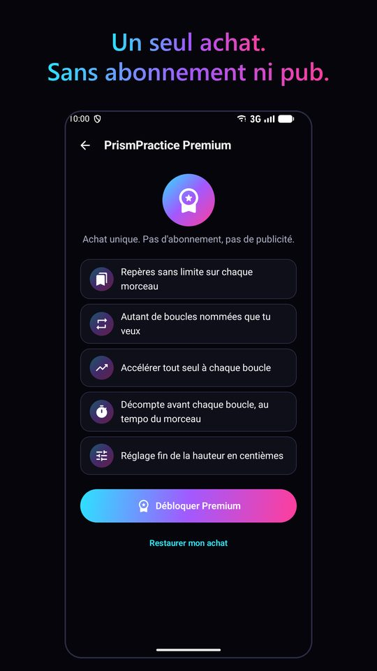
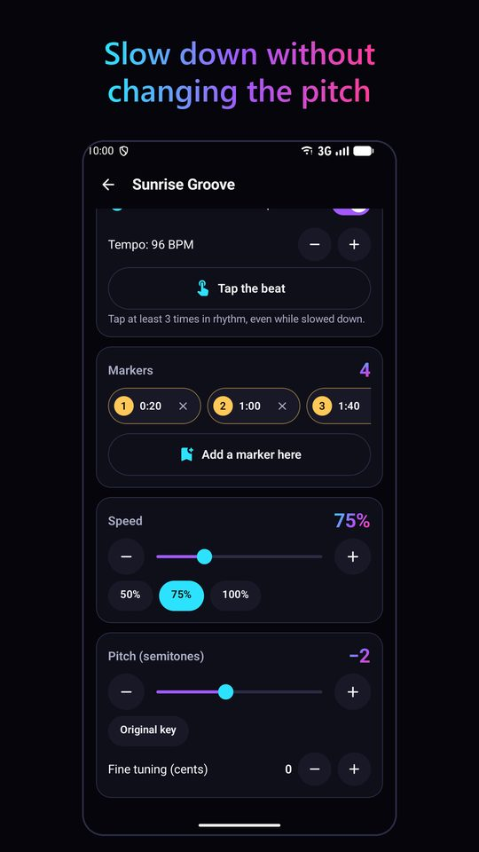
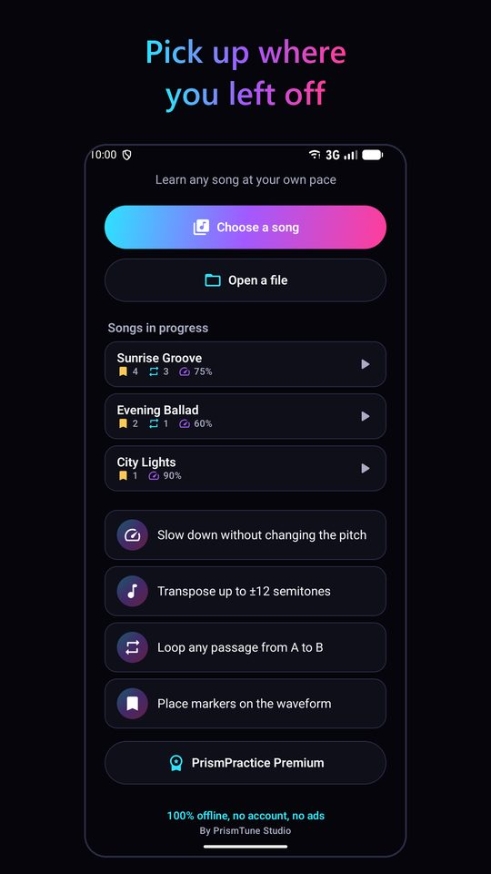
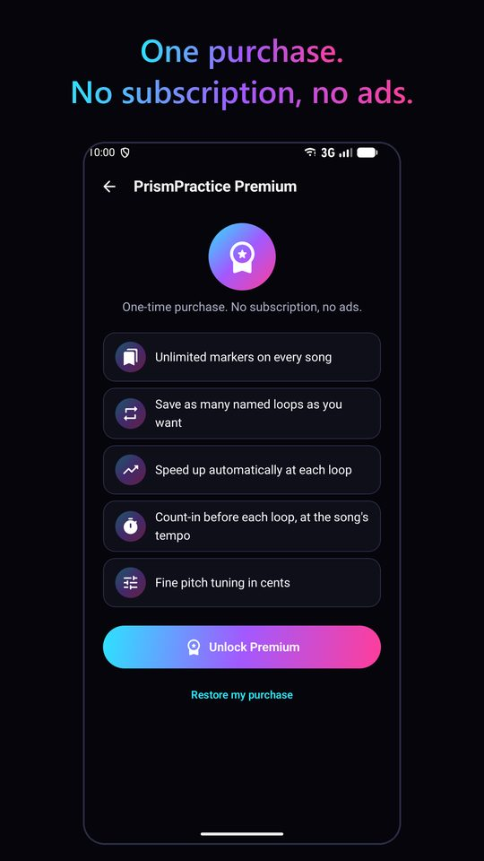

Apprenez n'importe quel morceau,
à votre rythme.
Learn any song,
at your own pace.
PrismPractice est un outil d'entraînement pour les musiciens, chanteurs, danseurs et élèves qui apprennent la musique à l'oreille : ralentir, répéter un passage, changer la tonalité.
PrismPractice is a practice tool for musicians, singers, dancers and students who learn music by ear: slow down, loop a passage, change the key.
- Sans compte
- Sans publicité
- 100 % hors ligne
- 7 langues
- No account
- No ads
- 100% offline
- 7 languages


Tout pour travailler un passage difficile
Everything to work on a hard passage
Ouvrez un morceau de votre téléphone, puis réglez-le comme il vous faut.
Open a song from your phone, then set it up the way you need.
Ralentir
Slow down
De 25 % à 200 % de la vitesse, sans changer la note.
From 25% to 200% speed, without changing the pitch.
Transposer
Transpose
Jusqu'à ±12 demi-tons pour chanter ou jouer dans votre tonalité.
Up to ±12 semitones to sing or play in your key.
Boucle A-B
A-B loop
Répétez un passage, directement sur la forme d'onde, avec zoom et réglage fin.
Repeat a passage right on the waveform, with zoom and fine adjustment.
Repères
Markers
Marquez les passages difficiles et revenez-y d'un toucher.
Mark the hard parts and jump back to them in one tap.
Travail retenu
Progress saved
Repères, boucle, vitesse et tonalité sont gardés pour chaque morceau.
Markers, loop, speed and key are kept for every song.
Écran éteint
Screen off
La lecture continue, avec les commandes dans la notification.
Playback keeps going, with controls in the notification.
Aperçu
Preview






Vos morceaux restent chez vous
Your songs stay with you
- PrismPractice fonctionne entièrement hors ligne : vos morceaux ne quittent jamais votre téléphone.
- Aucun compte, aucune publicité, aucun suivi.
- L'achat Premium facultatif est traité par Google Play.
- PrismPractice works fully offline: your songs never leave your phone.
- No account, no ads, no tracking.
- The optional Premium purchase is handled by Google Play.